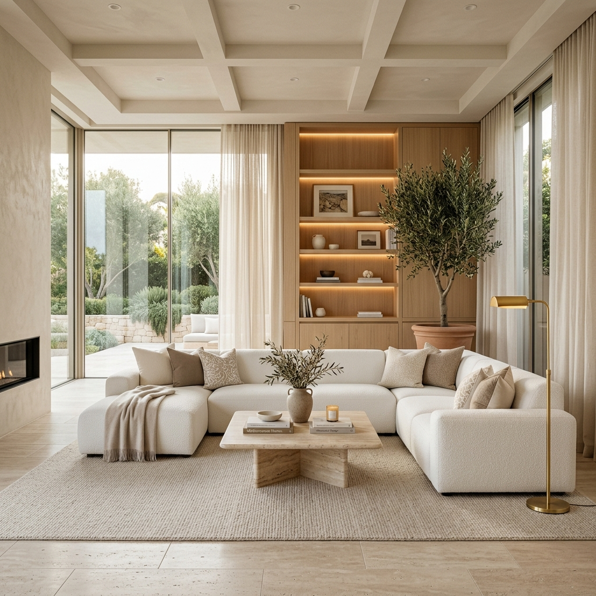
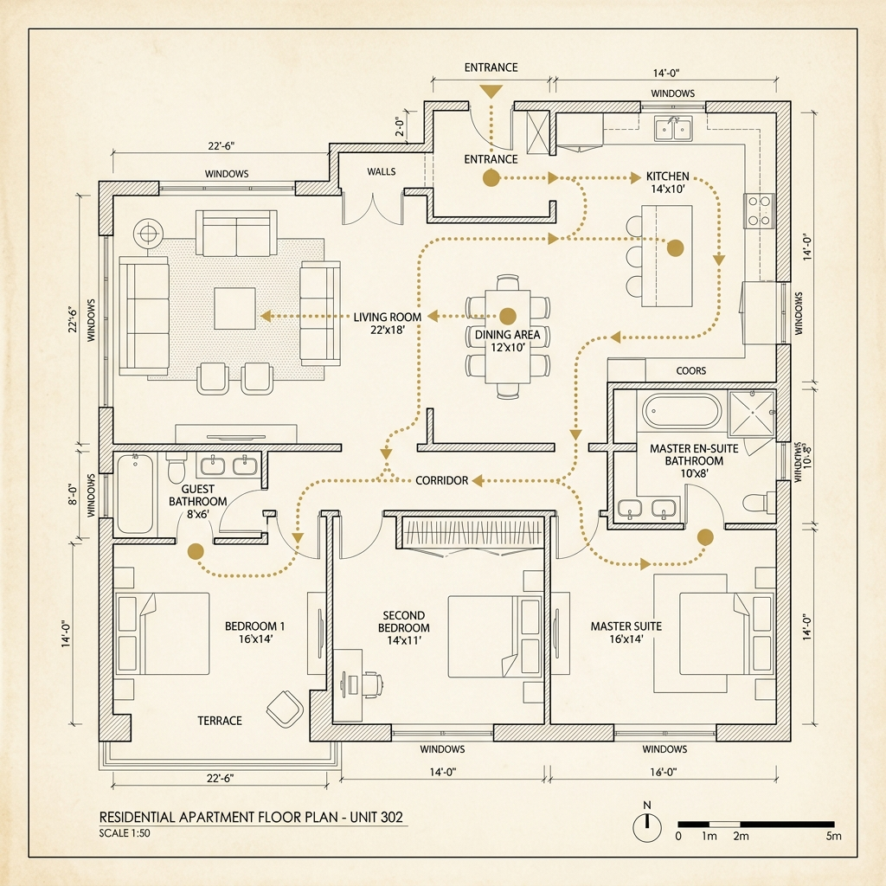
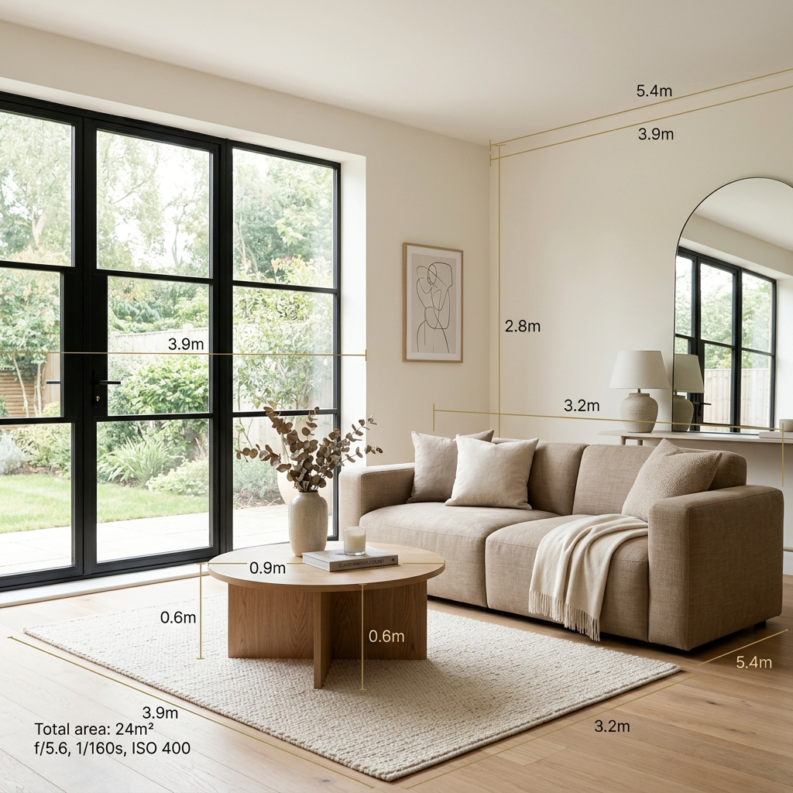
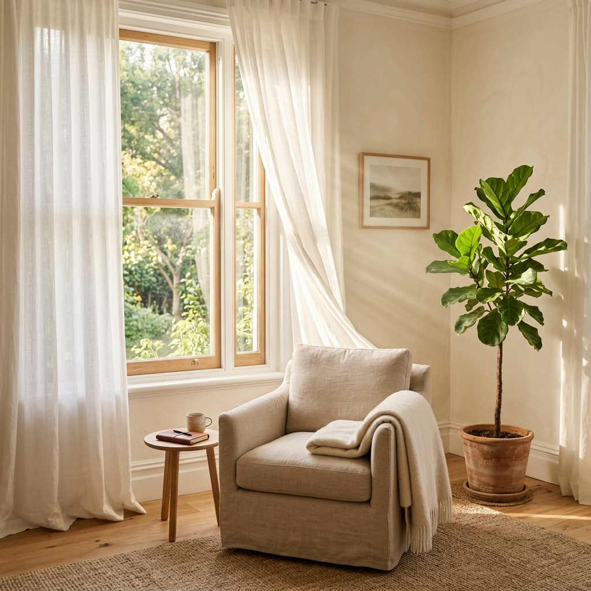
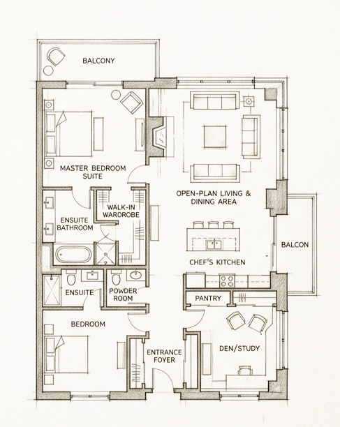

Spatial Design Studio · Hyderabad · Est. 2026
We believe the most beautiful thing a home can do
is make your life feel effortless. That begins with
spatial intelligence — long before aesthetics.
Most interior design starts with how it looks.
We start with how it works.
Three things we solve before design begins. Because the way a space works is what makes it beautiful, functional and effortless to live in.

01
We map how you move through every room — every door, corridor, and daily routine — before a single piece of furniture is placed or a wall is touched.
02
Scale determines how a space feels. We ensure every element — from ceiling height to furniture depth — is proportioned precisely for your specific space.

03
We study how natural light moves through your home at different times of day before deciding where to place workspaces, rest zones, and feature walls.

Spatial design is the discipline of understanding how a space functions.
It considers the physical and psychological experience of being inside a room — how you enter it, how you move through it, where your eye travels, and how the space makes you feel over time.
How you move
through the space.
How the space is
scaled and balanced.
How natural light
shapes the space.
How the space
makes you feel.
A home that works beautifully is never by chance.
It is designed with intelligence.

01
We map how you move through every room — every door, corridor, and daily routine.
02
Scale determines how a space feels.
03
We study how natural light moves through your home at different times of day.
At its core, spatial design asks:
It analyses layout, circulation, proportion, natural light, acoustics, and the relationship between rooms — all before a single finish or furniture piece is chosen.
With these three solved, we begin designing your home
to be both beautiful and functional.